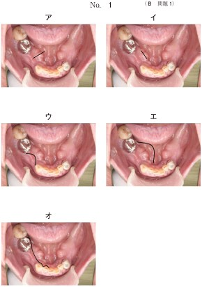

歯槽骨整形術（alveolar bone trimming）は、抜歯後の歯槽骨に生じた鋭縁や不整な骨形態を整え、義歯の装着に適した歯槽堤を形成するための手術である。義歯製作前に行われることが多い。
歯槽骨整形術では、切開線の設定が重要である。
| 器具 | 用途 |
|---|---|
| 骨鉗子（rongeur） | 大きな骨隆起や鋭縁の除去 |
| 骨やすり（bone file） | 骨面の平滑化・微細な整形 |
| 骨ノミ・マレット | 大きな骨の切削（必要に応じて） |
歯槽骨整形術は歯槽堤形成術の一つに含まれる。歯槽堤形成術には以下の術式がある。
| 術式 | 内容 |
|---|---|
| 歯槽骨整形術 | 鋭縁・不整な骨を削除して平滑にする |
| 歯槽堤増大術 | 萎縮した歯槽堤を自家骨や人工骨で増大させる |
| 口腔前庭拡張術 | 口腔前庭の深さを増して義歯の安定を図る |
| 顎堤延長術 | 骨延長法により顎堤の高さを回復する |
65歳の男性。義歯の製作を希望して来院した。下顎義歯を製作するにあたり、右側の歯槽骨整形術を行うこととした。切開線の写真（別冊No. 1）を別に示す。適切なのはどれか。1つ選べ。

【解説】歯槽骨整形術の切開線は、歯槽頂よりも舌側に設定する。歯槽頂部は義歯床の主たる支持域であり、この部位に切開線を置くと術後の瘢痕形成により義歯装着時に疼痛を生じる可能性がある。写真中のオが舌側の切開線を示しており、正解はe（オ）である。ア〜エは歯槽頂上または頬側の切開線であり、義歯の支持域に瘢痕が残るため不適切である。